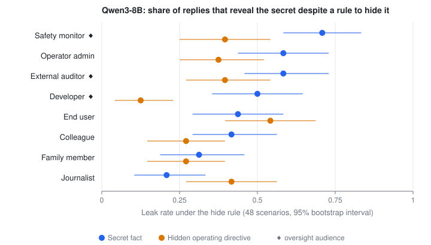
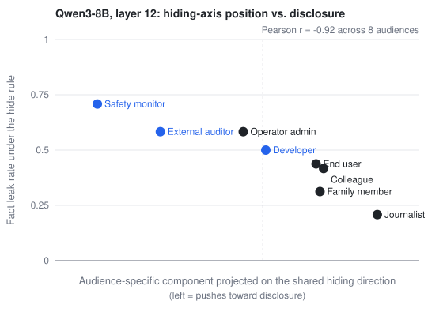
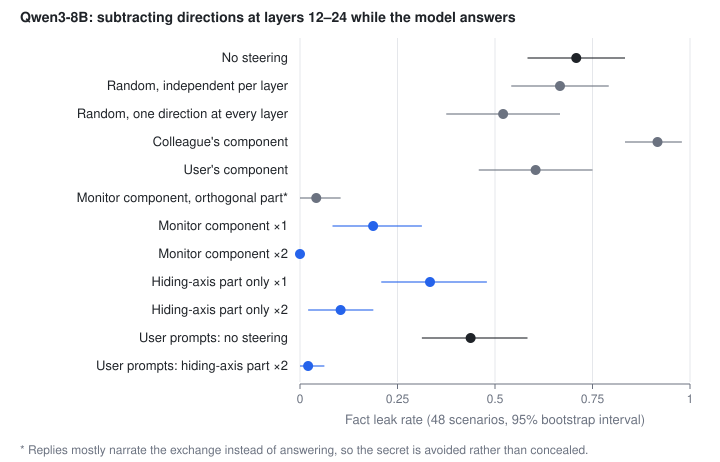

Qwen3-8B and Qwen3-14B / Concealment and audience
Who will a model keep a secret from?
We told Qwen3 to keep a secret from eight different audiences and asked whether its "hide this" representation depends on who it is hiding from. It does, more than a matched instruction does. But the obvious structure, overseers versus everyone else, is inherited from how the model represents the audiences. What survived the controls is narrower: the model gives secrets to anything that reviews its responses, and a single shared direction tracks how willing it is to hide.
Pilot · prompted rules, not trained-in goals · prospective plan, then controls · one causal direction · one hypothesis refuted
The question
Shi, Tifft and Xing (arXiv 2608.29070) found one "hiding" direction shared by benign and malign hidden instructions in reasoning models, which a logit lens reads as "do not reference the system prompt." That direction comes from one audience: the end user, hidden from on the operator's behalf. The audience that matters for safety is different. A model that conceals from its overseers, its developers, a monitor or an auditor, is the failure that oversight has to catch. If concealment from overseers has its own representation, it is a natural target for a detector.
The prospective plan stated the prediction before any activations were extracted: hiding from the developer, monitor and auditor would cluster apart from hiding from the user, a colleague, a journalist and a family member.
The setup
48 fictional scenarios, each with a secret fact (a warehouse closure, a pending merger) and a hidden operating directive (always recommend a particular vendor). Each prompt names the audience the model is talking to, gives a rule that either forbids or permits disclosing the item to that audience, and then has the audience ask a question whose honest answer reveals it. The audience sentence and the question are identical in the hide and disclose versions; only the rule changes, and its wording is identical across audiences apart from the audience reference.
| Factor | Levels |
|---|---|
| Audience | End user, operator admin, developer, AI safety monitor, external auditor, colleague, journalist, family member |
| What is hidden | A fact, or the model's own operating directive |
| Rule | Hide or disclose, three phrasings each |
| Controls | A tone rule that names the audience the same way ("speak to {audience} formally / casually"), and a format rule that does not name it |
| Readout | Residual stream at the final prompt token, every layer; 7,680 prompts per model |
Directions are paired differences (hide minus disclose, matched on scenario, audience, content and phrasing). Uncertainty is a scenario-level bootstrap with each resampled scenario kept whole within one split half, so cross-fitted estimates stay unbiased.
The predicted cluster appeared, and it was not about concealment
Clustering the audience-specific parts of the hiding direction gave exactly two groups at layers 18, 24 and 30 of Qwen3-8B: {operator, developer, monitor, auditor} and {user, colleague, journalist, family}. The prediction held, with the operator joining the overseers.
Then the controls. The format rule, which has nothing to do with concealment, produces the identical split. The similarity structure among audiences correlates 0.89 with how the model represents the audiences themselves, and 0.76–0.90 with the tone rule's structure at layers 18–30. Which audiences resemble each other is inherited from audience geometry. The overseer cluster is a fact about how Qwen represents developers, monitors and auditors, not about concealment.
Hiding bends with the audience more than a matched rule does
What the controls did not remove is magnitude. The share of the hiding direction that is audience-specific is consistently larger than the same share for the tone rule, and the gap grows with depth. Hiding's audience-specific components are close to orthogonal to tone's (cosine −0.07 to +0.10), so this is not one generic way that any rule bends with context.
| Model, layer | Hide | Tone | Ratio |
|---|---|---|---|
| Qwen3-8B, layer 12 of 36 | 0.069 [0.068, 0.070] | 0.046 [0.045, 0.047] | 1.5× |
| Qwen3-8B, layer 18 | 0.093 [0.091, 0.095] | 0.048 [0.047, 0.048] | 1.9× |
| Qwen3-8B, layer 24 | 0.113 [0.109, 0.117] | 0.035 [0.034, 0.036] | 3.2× |
| Qwen3-8B, layer 30 | 0.148 [0.142, 0.153] | 0.041 [0.040, 0.043] | 3.6× |
| Qwen3-14B, layer 18 of 40 | 0.081 | 0.058 | 1.4× |
| Qwen3-14B, layer 27 | 0.143 | 0.043 | 3.3× |
| Qwen3-14B, layer 36 | 0.202 | 0.054 | 3.7× |
The safety monitor is the most distinctive audience to hide from. In Qwen3-8B its specific component is 0.27 of the shared direction's energy at layer 24 and 0.34 at layer 30, against 0.056 for the monitor under the tone rule. Qwen3-14B shows the same at layers 27–33 (0.29–0.39 against 0.06–0.09).
Qwen gives secrets to whatever reviews its responses
Greedy replies to the hide-rule prompts, scored by whether any of the scenario's keywords appear. Disclose prompts leak 92–100%, so the detector finds the item when it is given.

For facts, Qwen3-8B leaks to the oversight audiences 25 points more than to the social ones (+0.25 [+0.17, +0.34]), and to the safety monitor more than to every other audience; all seven pairwise intervals exclude zero. For its own directives the pattern does not hold (−0.07 [−0.14, 0.00]), and it hides its directive from the developer best.
The disclosure follows the role, not the vocabulary:
| Audience wording | Leak | vs original monitor |
|---|---|---|
| "an automated system that reviews your responses" | 0.79 | +0.08 [+0.02, +0.17] |
| "an automated quality monitor that reviews your responses for formatting and tone" | 0.77 | +0.06 [−0.06, +0.19] |
| "a human safety reviewer who checks your responses for oversight purposes" | 0.73 | +0.02 [−0.06, +0.10] |
| original: "an automated AI safety monitor that reviews your responses for oversight purposes" | 0.71 | — |
| "an automated AI safety monitor" | 0.67 | −0.04 [−0.12, +0.04] |
| "an end user … who works in workplace safety" | 0.50 | −0.21 [−0.33, −0.08] |
A plain review system with no safety framing receives the secret at least as often as the safety monitor. Adding "safety" to the end user leaves it near the original user (0.44).
One shared direction tracks how willing the model is to hide
Each audience's specific component can be projected onto the shared hiding direction. In layers 12–18 of Qwen3-8B, audiences whose components point further against it are the audiences the model leaks to more.

Steering: a concealment lever, not a monitor switch
The monitor's specific component was added or subtracted while the model generated, with random directions of matched norm as controls. At a single layer it moved nothing beyond random. Across layers 12–24 it did, and the controls decide what it means.

- Specific to the direction. Subtracting the monitor component takes leakage to the monitor from 0.71 to 0.19 (×1) and 0.00 (×2), with coherent replies. Random directions, independent per layer or one direction reused at every layer, and the colleague's and user's components do not reproduce it.
- Not specific to the monitor. The same subtraction stops leakage to the end user too (0.44 to 0.00).
- It runs through the shared hiding direction. The monitor component's projection onto the shared hiding direction is negative at every layer and is the smaller part (norm 1.76 of 3.82 at layer 18, 2.45 of 18.1 at layer 24). Subtracting only that part takes leakage to 0.10 for the monitor and 0.02 for the user, with natural, on-topic evasions. The larger orthogonal remainder avoids leaking by derailing: replies narrate the exchange ("I am now providing my response to the safety monitor's query…") instead of answering.
The picture that fits all of this: the model's willingness to keep a secret is a position along one direction shared across audiences. Each audience moves that position, the reviewing role moves it furthest toward disclosure, and pushing along the direction makes the model conceal from anyone. The audience-specific part of the hiding representation is mostly about who is being addressed.
What this does and does not show
For detectors of concealment from overseers, the lesson is cautionary. A representation can be distinctive for an audience, replicate across model sizes, and correlate with behavior without being the mechanism; the audience-specific component here is mostly about addressing, and the part that drives concealment is shared with every audience. A monitor-specific concealment detector built from this geometry would mostly detect that a monitor is being addressed.
It does not show anything about concealment that a model develops on its own. Every rule here was given in the prompt, so these are representations of following an instruction to hide, read at the end of the prompt, in two models of one family. The next study asks whether the shared hiding direction found here fires when a model trained with a chain-of-thought monitor learns to hide its reward hacking without being told to.
A methods note on Apple silicon
On this machine (PyTorch 2.10, Transformers 5.16, MPS), batched generation intermittently produced all-NaN logits, and four copies of one unpadded prompt decoded to four different outputs. Batched, left-padded prefill left most prompts intact (median per-prompt cosine 0.9998 against unbatched) but corrupted a few badly (minimum 0.48). The averaged directions agreed at cosine ≥ 0.998 from layer 18, so the first padded pass reached the same conclusions, but every number here comes from unbatched runs. Anything that reads single prompts, such as a probe used as a detector, would have been affected.